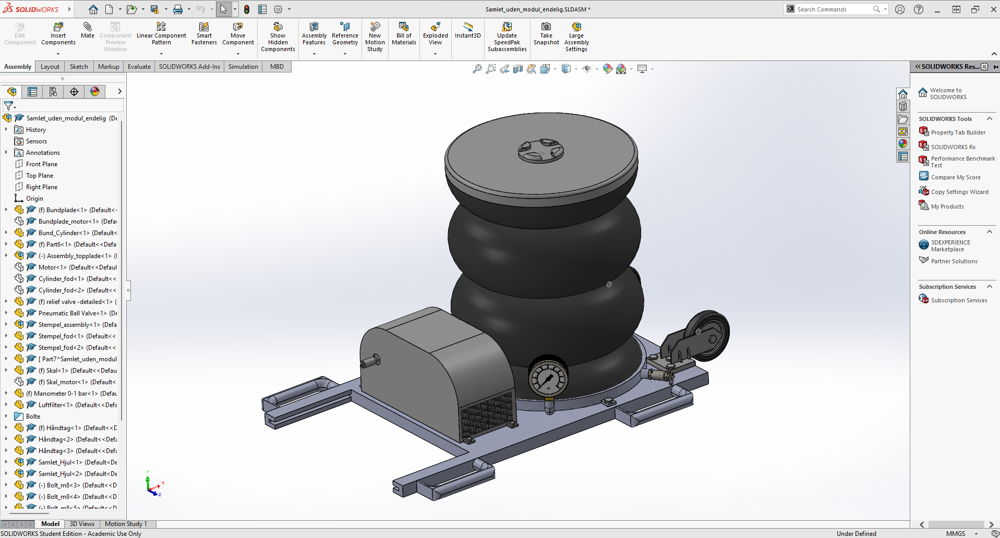
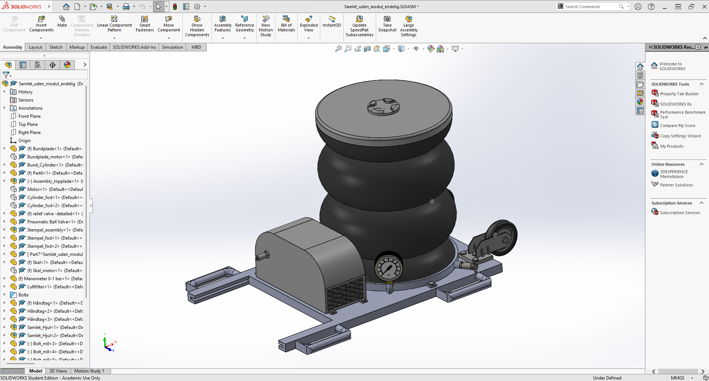

Type of project
Product development using Tjalve
Context
DTU project
Year
2019
This project was about using Eskild Tjalve's theory on a structured design process to create a carjack from cradle to a finished product. In short, the fundamental idea in Tjalve's theory is that the earlier in the development phase the idea is, the broader the solution space should be. Therefore this project was about exploring a wide solution space before deciding on a final design.
 

The first step was to make a product specification for the product. Based on the product specification five key functionalities were determined for the success of the product: How to get the carjack up and down, how to operate the carjack, how a motor should be interfaced with the carjack, mechanical advantage and locking mechanisms. These five functions were all explored through sketching. Ideas for all functionalities were sketched to explore the solution space.
A morphology chart was made to assemble four different designs that could receive weighted scores in key criteria to determine the solution to move forward with.
The winning design was a design that revolved around having a manual foot pump that would drive a shaft connected to a pump. This pump would then pump air into the jack that would then lift the car. The design was sketched and had a simple interface analysis made. finally, the design was modelled in Solidworks.